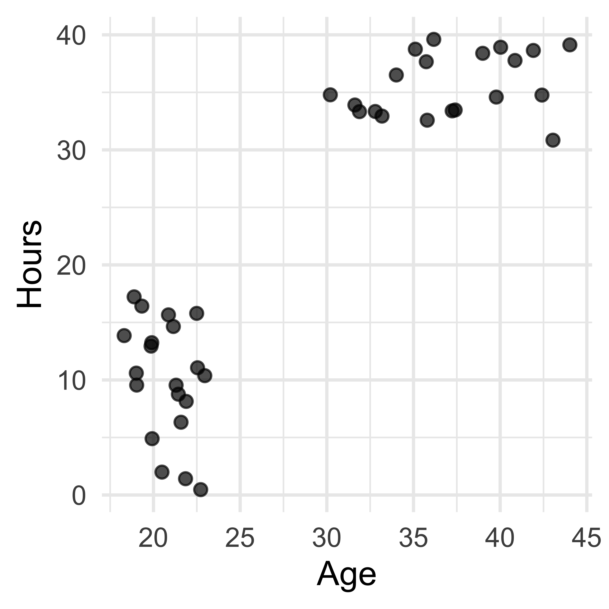
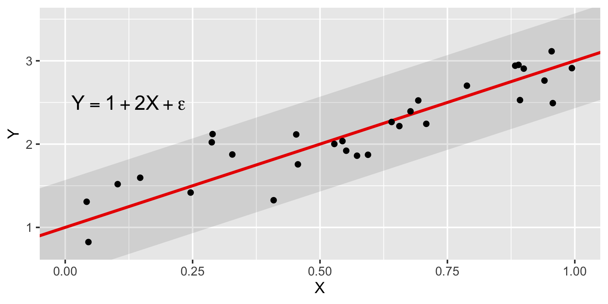
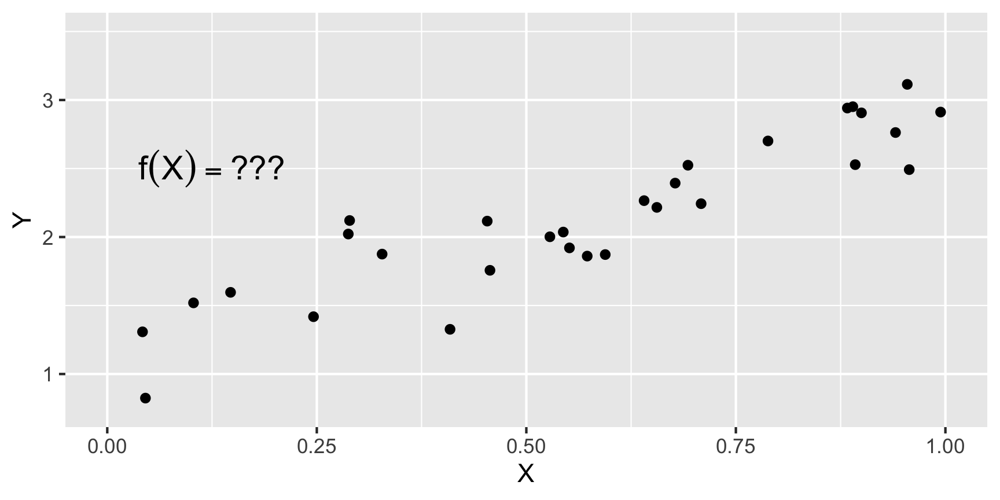
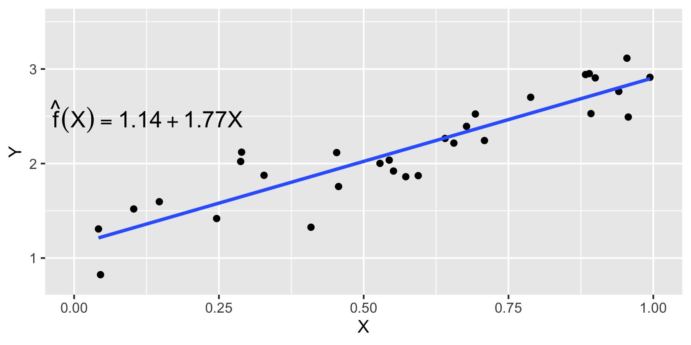
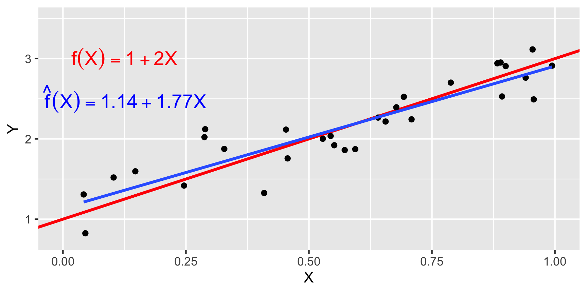
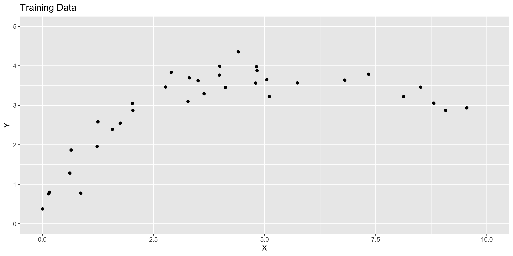
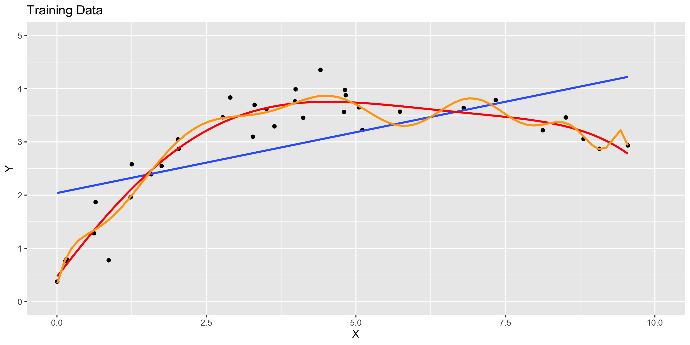
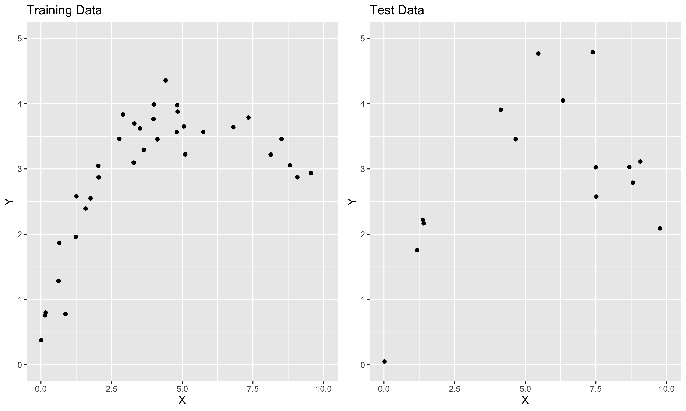
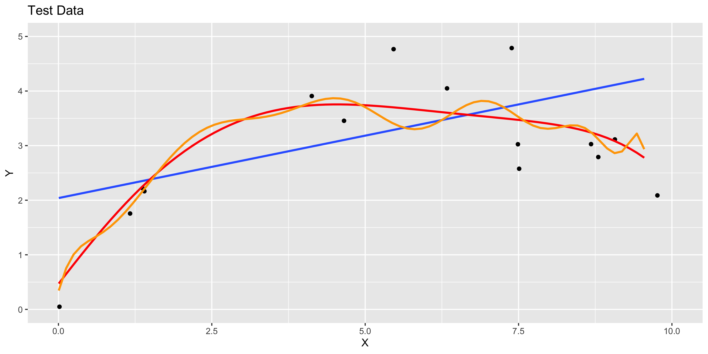
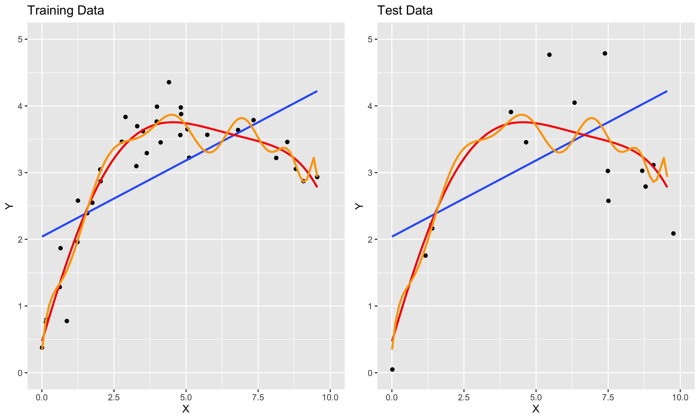

Assessing Accuracy
Grayson White
Stat 243
Week 2 | Fall 2026
Goals for Today (and next time)
Today:
- Continue to think about assessing accuracy.
Friday (NOT lab):
- Linear regression.
Warm Up: Stat Learning Terms
Warm Up (Part 1)
For each of the following scenarios, identify if it is primarily a…
Prediction or Inference task
Parametric or Non-Parametric method
Supervised or Unsupervised problem
Regression or Classification problem
- A biologist wants to determine how strongly certain genes are correlated with breast cancer to improve early detection DNA tests. They will fit a multiple linear regression model based on DNA sequencing data of people with and without breast cancer.
- Researchers at Zillow (a real estate app) want to predict which users actually want to buy a home vs. simply browse fancy mansions. They will train a neural network using data provided by users, their browsing habits, and other user data harvested from website “cookies”.
Warm Up (Part 2)
Insomnia Cookies wants to better understand their customers, so they conduct a small survey and ask customers their age (\(X_1\)) and hours worked per week (\(X_2\)).
What can Insomnia Cookies infer about their customers?
Label each “cluster”.
Determine whether this is supervised or unsupervised learning, and explain why.
Supervised Learning
Supervised Learning
- In the supervised learning regression, we observe the values of a quantitative response \(Y\), as well as \(p\) many predictors \(X_1, \dots, X_p\) (these may be quantitative or categorical)
- We assume there is a certain relationship between response and predictors: \[ Y = f(X_1, \dots, X_p) + \epsilon \]
The function \(f\) is called the model or regression function and the random variable \(\epsilon\) is the error term
The function \(f\) represents our best estimate of the value of \(Y\) given \(X\), or the expected value of \(Y\) given \(X\) (sometimes written: \(E[Y \vert X]\))
Estimating \(f\)
- In practice, we will never know the true formula for \(f\).
- Goal of stat learning is to estimate \(f\), given sample data for \(X_1, \dots, X_p\) and \(Y\).
- Our estimate for the the true model \(f\) is called the fitted model \(\hat f\).
- How we estimate \(f\) will depend on our research goals:
- Make predictions about the values of \(Y\) using \(X_1, \dots , X_p\)
- Very interested in finding \(\hat f\) that makes accurate predictions for \(Y\)
- Less interested in the learning the true form of \(f\)
- Make inferences about relationship between \(Y\) and \(X_1, \dots , X_p\)
- Very interested in learning the true form of \(f\)
- Less interested in finding \(\hat f\) that makes accurate predictions for \(Y\)
An Example
Consider two quantitative variables \(X\) and \(Y\)
- Suppose, in truth, \(Y = 1 + 2X + \epsilon\), where \(\epsilon \sim N(\mu = 0, \sigma = 0.25)\).
- The true model is \(f(x) = 1 + 2x\).

An Example
Consider two quantitative variables \(X\) and \(Y\)
Suppose, in truth, \(Y = 1 + 2X + \epsilon\), where \(\epsilon \sim N(\mu = 0, \sigma = 0.25)\).
But data \(Y\) will not always lie on this line:

An Example
Consider two quantitative variables \(X\) and \(Y\)
In reality, we won’t know the true model.
We only have the observed data

An Example
Consider two quantitative variables \(X\) and \(Y\)
Instead, we create an estimate \(\hat f\) based on data
Here, we use least squares regression (minimizing MSE) to estimate \(f\)

An Example
Consider two quantitative variables \(X\) and \(Y\)
Our estimated model is \(\hat f(x) = 1.14 + 1.77x\)
Which is close to the true model of \(f(x) = 1 + 2x\)

Types of Error
There are two sources of error in a model, \[ \hat{Y} = \hat{f}(X) \] for the true relationship, \[ Y = f(X)+\epsilon \]
\[ \text{Error} = Y - \hat{Y} = \underbrace{(f - \hat{f})}_{\text{Reducible}} + \underbrace{\epsilon}_{\text{irreducible}} \]
Reducible error: in the form of our estimate \(\hat{f}\) for \(f\).
Irreducible error: in the form of \(\epsilon\).
Quality of a Model
When given a modeling question, we can conceive of many possible models.
How do we measure quality of a model?
Devise a quantitative measurement of model error.
Select the model that minimizes this measure of error.
For regression, the most common measure of error is the Mean Squared Error (MSE): \[ \mathrm{MSE}(\hat{f}) = \frac{1}{n}\sum_{i=1}^n \Big(y_i - \hat{f}(x_i) \Big)^2, \] where \(\hat{f}\) is the model, \(x_i\) are the observed predictor values, and \(y_i\) are the corresponding observed response values.
Recall: other options like MAE and MZOL are popular for particular applications or regression and classification.
Mean Squared Error (MSE)
\[ \mathrm{MSE}(\hat{f}) = \frac{1}{n}\sum_{i=1}^n \Big(y_i - \hat{f}(x_i) \Big)^2 \]
Q: Under what circumstances is MSE small?
- A: When the (reducible + irreducible) error is small!
Q: What could go wrong if we try to minimize \(\mathrm{MSE}\) on observed data?
- Hint: Consider prediction with new penguins
- A: We could make a model too specific to our observed data that doesn’t generalize to new, unobserved data (i.e., overfitting)
Training and Test Data (for prediction problems)
We can solve this problem by dividing our data into training and test sets.
Training Data: Subset used for building a model
Test Data: Rest of data used for assessing model accuracy
If we have training and test data, we can:
Build many models on the training data
Compare their performance on the test data (e.g., compare MSE)
Select the model that did the best on the test data
An Example
Suppose we have 50 observations on a quantitative response \(Y\) and quantitative predictor \(X\)
We plan to use 70% of our data (35 observations) as a training set and the remaining 30% of the data (15 observations) as a test set.
We will fit three models:
A linear model; low flexibility
A quintic model; medium flexibility
A degree 15 model; high flexibility
Training Set

- Data follows a non-linear trend
Model 1, 2, and 3

- We build a linear, quintic, and 17th degree polynomial model
MSE Computation: Training Data
Now, we can compute the training MSE for these models:
lin_mod <- lm(Y ~ X, data = my_df)
lin_pred_train <- predict(lin_mod, my_df)
quintic_mod <- lm(Y ~ poly(X, degree = 5), data = my_df)
quintic_pred_train <- predict(quintic_mod, my_df)
poly_mod <- lm(Y ~ poly(X, degree = 15), data = my_df)
poly_pred_train <- predict(poly_mod, my_df)
get_MSE <- function(actual, pred){
mean((actual - pred)^2)
}
lin_mse_train <- get_MSE(my_df$Y, lin_pred_train)
quintic_mse_train <- get_MSE(my_df$Y, quintic_pred_train)
poly_mse_train <- get_MSE(my_df$Y, poly_pred_train)MSE Computation: Training Data
Now, we can compute the training MSE for these models:
Test Set

- Test data generated from same model as training data
Test Set with Models

- Models built on training data are plotted on test data
MSE Computation: Testing Data
Now, we can compute the test MSE for these models:
lin_mod <- lm(Y ~ X, data = my_df)
lin_pred <- predict(lin_mod, test_df)
quintic_mod <- lm(Y ~ poly(X, degree = 5), data = my_df)
quintic_pred <- predict(quintic_mod, test_df)
poly_mod <- lm(Y ~ poly(X, degree = 15), data = my_df)
poly_pred <- predict(poly_mod, test_df)
get_MSE <- function(actual, pred){
mean((actual - pred)^2)
}
lin_mse <- get_MSE(test_df$Y, lin_pred)
quintic_mse <- get_MSE(test_df$Y, quintic_pred)
poly_mse <- get_MSE(test_df$Y, poly_pred)MSE Computation: Testing Data
Now, we can compute the test MSE for these models:
model MSE
1 Linear 1.2809403
2 Quintic 0.3264478
3 Poly 1.8224322Best model?
Test vs Train

- The 15th degree poly model fits the training data well. But doesn’t do as well on test data.
Train vs Test MSE
| model | Train.MSE | Test.MSE |
|---|---|---|
| Linear | 0.677 | 1.281 |
| Quintic | 0.086 | 0.326 |
| Poly | 0.071 | 1.822 |

Bias-Variance Trade-off
Training vs Test MSE
Suppose we consider a variety of model shapes to predict \(Y\), with each model of increasing flexibility / complexity.
- What happens to the training MSE and the test MSE as model flexibility / complexity increases?
- As model flexibility / complexity increases, training MSE will decrease, but test MSE might not.
- Flexible / complex models may overfit data, meaning they fit patterns from the random error (noise), rather than the true model (signal)
- This leads to low train MSE, but high test MSE
- On the other hand, inflexible / simple models may be too rigid to fit the true pattern (lack the fidelity to convey signal)
- This may lead to high train MSE and high test MSE
MSE Decomposition
The U-curve for test MSE is a result of competition between two sources of error in a model
Expected test MSE can be decomposed as the sum of 3 quantities: \[ \mathrm{E} \Big[ ( y_0 - \hat{f}(x_0))^2 \big] = \left[\mathrm{Bias}(\hat{f}(x_0))\right]^2 + \mathrm{Var}(\hat{f}(x_0)) + \mathrm{Var}(\epsilon) \]
Here \(\mathrm{E} \Big[ ( y_0 - \hat{f}(x_0))^2 \big]\) denotes expected test MSE at \(x_0\), if many models for \(f\) were built using a variety of random training data sets containing \(x_0\)
Total expected test MSE is obtained by averaging across all possible \(x_0\) in the test set.
A proof is given in Section 7.3 of The Elements of Statistical Learning.
To minimize \(\mathrm{MSE}\), we need to simultaneously minimize both variance and bias.
MSE Decomposition
The U-curve for test MSE is a result of competition between two sources of error in a model
Expected test MSE can be decomposed as the sum of 3 quantities: \[ \mathrm{E} \Big[ ( y_0 - \hat{f}(x_0))^2 \big] = \left[\mathrm{Bias}(\hat{f}(x_0))\right]^2 + \mathrm{Var}(\hat{f}(x_0)) + \mathrm{Var}(\epsilon) \]
- (Squared) Bias – \(\left[\mathrm{Bias}(\hat{f}(x_0))\right]^2\) By “Bias”, we mean \(E[ \hat{f} (x_0) - f (x_0) ]\)
- Variance – \(\mathrm{Var}(\hat{f}(x_0))\)
- Irreducible Error Variance – \(\mathrm{Var}(\epsilon)\) Can’t do anything about this!
Takeaway: To minimize MSE, we need to balance minimizing bias AND variance.
Bias and Variance
Bias is amount by which model estimates, \(\hat{f}(x_0)\), differ from the truth, \(f(x_0)\).
Bias produced when assumed model doesn’t match reality
Simple models: Generally high bias
Complex models: Generally low bias
Variance is amount of variability in \(\hat{f}(x_0)\) across training sets
Simple models: Generally low variance
Complex models: Generally high variance
Bias-Variance Trade-off
Q: What happens as we pick more complex models?
As complexity increases, we tend to “overfit” model to training data.
Bias decreases and variance increases
We want a sufficiently complex model that doesn’t overfit training data.
- How we actually do this is a major theme of this course!!
Bias-Variance Trade-off

Next Time
- Linear regression